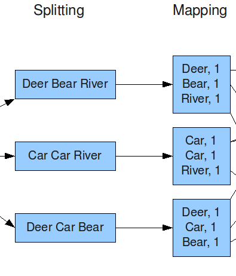

class: center, middle # MapReduce --- # MapReduce: Simplified Data Processing on Large Clusters ### Authors: Jeffrey Dean, Sanjay Ghemawat ### Presenter: Neil Seward --- # Contents 1. Defining Google's Problem 2. The MapReduce Model 3. Implementation of MapReduce 4. Fault Tolerance 5. Additions to the MapReduce Model 6. Evaluating Performance 7. Conclusions and Related Work --- # Defining Google's Problem - Google needed a new method to work with all of their indexed data.  --- # Defining Google's Problem - The new searching algorithm needed to work across a distributed set of thousands of computers. <br> <br> - These networked computers were considered to be mid-low tier in processing power. --- # Defining Google's Problem - The algorithm needed to be relatively simple to implement and understand, but still incorporate for fault tolerance, network bandwith, and other complex issues with data processing --- # The MapReduce Model - The MapReduce algorithm takes in a set of key/value pairs as input and produces a different set of key/value pairs as output. ### Input Key | Value ------------- | ------------- 0 | Banana 1 | Banana ### Output Key | Value ------------- | ------------- Banana | 2 --- # The MapReduce Model - The MapReduce algorithm has two main functions: the Map function, and the Reduce function. <br> <br> - Both the Map function and the Reduce function can be written differently, depending on the user requirements of the MapReduce function. --- # The MapReduce Model ### Map - The Map function takes a document with a list of values, and emits a transitional key/value pair. <br> <br> --- # The MapReduce Model ## Map Example ### Input Key | Value ------------- | ------------- 0 | Banana 1 | Banana ### Output Key | Value ------------- | ------------- Banana | 1 Banana | 1 --- # The MapReduce Model ### Reduce - The Reduce function accepts an intermediate key from the Map function along with the set of values for that key, and emits a subset of the given values. <br> <br> --- # The MapReduce Model ## Map Example ### Input Key | Value ------------- | ------------- Banana | {1, 1} ### Output Key | Value ------------- | ------------- Banana | 2 --- # MapReduce Implementation ### Architecture - There are many different implementations of MapReduce for constrasting architectures. <br> <br> - The implementation environment used in the paper is most common application of MapReduce; an environment of thousands of low-end networked computers. --- # MapReduce Implementation ### Components - The MapReduce model uses two main components to carry out commands and to load files for input and to store output. <br> <br> - **Master**: assigns Map and Reduce tasks to workers, updates worker status, tracks file locations, and handles faults in workers. <br> <br> - **Worker**: performs Map and Reduce tasks, sends updates to master, and performs read and write operations to files. --- # MapReduce Implementation ### Component Structure --- # MapReduce Implementation ### Splitting - The MapReduce library will first split the input files into smaller subsets. <br> <br> <img allign="left" src="img/splitting-step.png" style="width: 500px; height: 350px"/> [1] --- # MapReduce Implementation ### Mapping - Each worker assigned to mapping will read a subset input file and map intermediate key/value pairs. <br> <br> - Once mapped, these pairs are written as buffers into memory. <br> <br>  [1] --- # References 1. http://xiaochongzhang.me/blog/wp-content/uploads/2013/05/MapReduce_Work_Structure.png